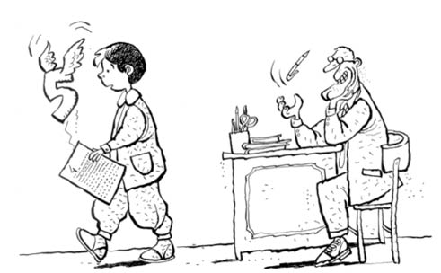

OKUL
Ahmet’imle buluştuk ya acayip sevindim.
Arada bize geliyorlar... Babam hep sürprizlerle dolu, organizatör gibi, evimiz hep şenlikli. Ama Ali Amcalarla arada yaptığımız çiğköfte partileri unutulacak gibi değil. O zaman çiğköfte bilindik bir şey değil, Güler Teyzemin -sofraları geniş, kalpleri zengin- sayesinde Urfa’nın şahane lezzetleriyle tanışmış durumdayız.
Ahmet’le de her şeye gülüyoruz eğleniyoruz. Aytül de Sanem’le iyi arkadaş. Ablam zaten hep çalışkanlık timsali, örnek bir abla. Annemse huzur veren, sevgi dolu, çocuklarına hayatta fiske vurmamış bir anne.
Ahmet’in de benim okulda oluşu şahane bir durum. Tabii bu şans eseri olmuyor. İki baba birbirini çok seviyor.
Bu arada, dikkatimi çeken şey eskiden eve mavi gelen babalarımızın şimdi yeşil gelmeleri. Babalarımız Hava Lisesi kapanınca Kara Kuvvetleri’ne geçtiler. Işıklar Askerî Lisesi’nde çalışmaya başlayınca yeşil oldular.
Okulumuzun bir müdürü var; uzun boylu, kabarık ve kıvırcık saçlı. Aramızda bir şarkı söylüyoruz: Müdürüün kafasıı, karınca yuvaasııı...
Sınıfta çalışkan bir kız da yok âşık olayım. Doğrusu, sınıfta çalışkan herhangi biri yok; bir tek Murat. Bildiğin Murat... I. Murat değil, babası Devlet Su İşleri’nde çalışıyor. Murat’ın yazısı inci gibi.
İnsan ilkokul öğretmenin adını hatırlamaz mı arkadaş? İzmir’deki öğretmenimin adı Necmiye Vural’dı. Çok severdim. 4. ve 5. sınıfları okutan Bursa’daki öğretmenimin ismini ise hatırlamıyorum. Niye mi?
Bir gün matematikten sınav olduk. Öğretmen sınav kâğıtlarımızı dağıttı, 5 almışım, süper! Alışık da değilim ama çok sevinçliyim doğrusu. Öğretmenimiz, “Soruları tahtada çözüyorum, doğru cevapları görün” dedi, çözdü soruları. Baktım benim bir sorum yanlış ama öğretmen fark etmemiş, tam not vermiş. Küçük kalbimle düşündüm, gidip söyleyeyim mi diye, ama söylersem notum 4’e inecek. Kafam çok karıştı. Anneannemin ve babaannemin öğütleri, anlattıkları masallar geldi aklıma... Bir yanda da “Sesini çıkarma, eve matematikten 5 almanın gururuyla git, tarihinde yok öyle not” düşüncesi efil efil esti gönlümde ama sonra, “Yakışmaz koçum sana” dedim içimden ve gittim öğretmenin yanına, “Ö-örtmenim, ben bunu yanlış yapmışım ama bana tam not vermişsiniz” dedim. Baktı kâğıda, “Hıı, doğru” dedi ve çizdi güzelim 5’in üstünü, “Al, 4! Git otur yerine” dedi. Gittim oturdum. Bir moralim bozuldu...
Akşam, yattım ama uyku tutmuyor. “Lan salak, ne gereği vardı” diyor sol tarafımdaki kötülük perisi. Aslında şunu fark ettim; yıllar sonra, o öğretmenden tüm beklediğim, “Aferin, hep böyle dürüst ol oğlum” cümlesiymiş. Bana onu söyleseydi, isterse 3 versin. Hele bir de sınıfa, “Arkadaşlar, Şerif böyle bir şey yaptı, hepinize örnek olsun” deseydi, takmış olacaktı bana pelerini, ben artık oradan oraya uçar, iyilik dağıtırım.
“Bir daha da hiç dürüstlük yapmadım” der, bu bölümü bitiririm ama olmaz.
İşte, o öğretmenimin adını hiç hatırlamıyorum. Banyosunda limon ağacı olduğunu söylemişti, onu unutmam, başka da bir şey hatırlamam.
Bir de, yüzü kıllı olduğu için sınıfta benden başka kimsenin pek arkadaşlık yapmadığı Ali’ye karnesinde düşük notlar gelmişti, fırk fırk ağlamıştı, ben teselli ettim, başka teselli eden olmamıştı, onu da hiç unutmam.
Sonradan öğrendim; aslında dürüst olduğunda, insanca davrandığında kimseden teşekkür beklemeyecekmişsin. Çünkü hayat adil değil ama hayatın kendi içinde ilginç bir adaleti var; insanlar unutmuyorlar ve karşılığını bir gün, birkaç iyi dost olarak alıyorsun.
Matematik dersiyse unutuyor. Hiç hatırlamadı matematik dersi, ona karşı yaptığım insanlığı. Bir daha öyle not alamadım matematik, fen dersinden. Oysa zamanında büyük efendiliğim olmuştu ona karşı ama unuttu. Hep nankör davrandı bana.
Ahmet unutmadı ama...